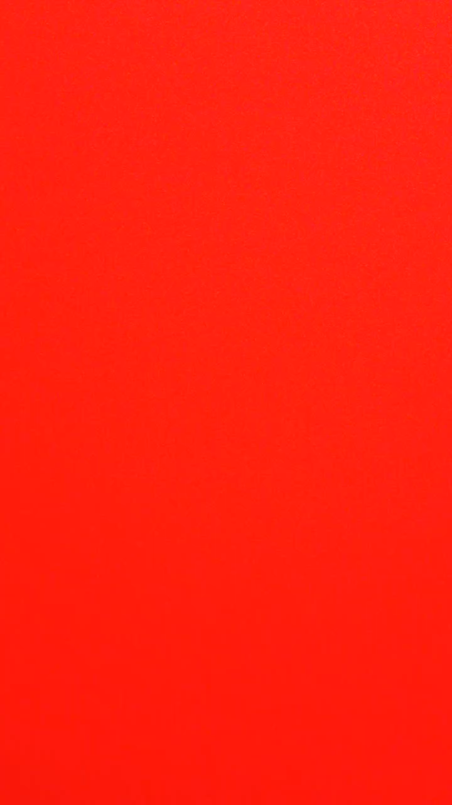
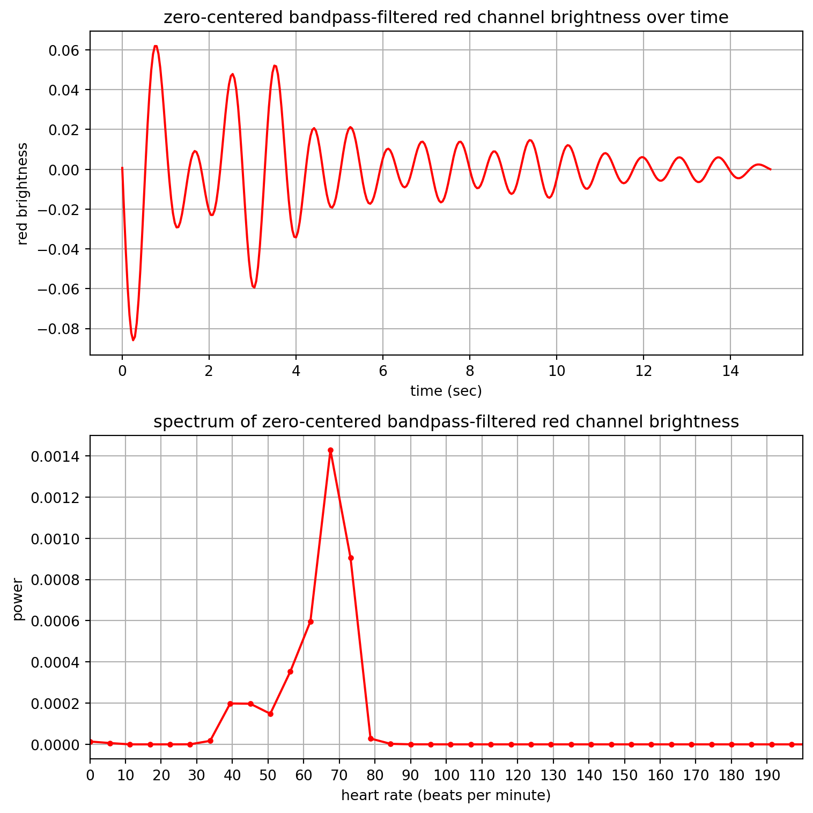

import imageio
filename = "../images/IMG_1383.MOV"
vid = imageio.get_reader(filename, 'ffmpeg')
fps = vid.get_meta_data()['fps']
print(f"read video at {fps} fps")read video at 24.0 fpsDue: Apr 5 by 11:59 pm eastern standard time
Submit a single file called name_09.py to Brightspace/OWL where name is replaced with your last name, e.g. gribble_09.py
Estimate your heart rate using a video taken with your webcam or your smartphone (or if you don’t have access to one, you can analyse my video instead, linked below).
Here’s what you will do to generate the data. First, make sure you’re in a brightly lit space (i.e. turn on the lights if you’re in a dark room). Better yet, find a light source like a desk lamp or a window, and stand in front of it with your webcam or smartphone camera. Take a minute or two to sit down and relax, to get your heart rate near its resting rate (usually around 60 beats per minute). Now gently rest the tip of your index finger against the lens of your webcam or smartphone camera. Now record a video. Record for somewhere between 15 and 30 seconds. Try not to move your finger, keep it as still as you can for the duration of the video.
If you used your smartphone, transfer the video file to your computer. Open it up and look at it on the screen. Here’s a sample frame from mine, which was approximately 15 seconds in duration (sample rate 24.0 frames per second):

Here is a link to the complete video (you can right-click and save as… to download it):
The idea here is that as your heart pumps blood through your arteries and veins, the amount of light that the camera detects, as it comes through your fingertip, will be modulated by the differences in blood flow. The variation in brightness will be quite subtle, perhaps even not visible with the naked eye, and so your task is to use signal processing techniques to try to detect it.
Here are some suggestions as to how to proceed. First load in the video file. Each frame of the video will have three channels: red, green and blue. Each frame will contain the brightness of each pixel for each of the three channels red, green and blue. You might as well average over all the pixels in the frame to get an average brightness measure. The signal that you ultimately want is probably the brightness of the red channel over time (i.e. for each frame of the video).
Here are some other things to consider:
imageio and imageio-ffmpeg (uv add imageio "imageio[ffmpeg]")imageio package to load in the video file like so:read video at 24.0 fpsWhen I do this for my video (linked above), band-pass filtering between 40 and 80 beats per minute, I get the following:

You don’t need to get the exact same thing. The important thing is that you can identify the frequency corresponding to the peak of the spectrum, and convert that to beats per minute.